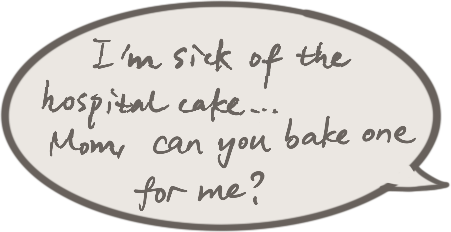

A few months later...
SCROLL DOWN
It was Teacher's Day.
Mom received many gifts and flowers from her students.
She received more than just Teacher's Day wishes.

It was the first time mom had smiled since then.
And from that moment on, she was going to do something about it...

With that, mom tried countless times...
With that, mom tried countless times...
Eventually...


Dad also started a new life
with the BUNNY DOLL.


EXPLORE IT!!!


A few years later...